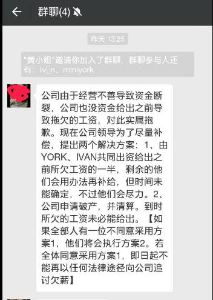

随着2017年春节的将至,很多朋友都在使用支付宝扫敬业福。新的1年即将到来,回顾2016年,觉得感触挺深的。
跟对人,做对的事情
在2016年到了1家创业公司,认识了一些能力不错的同事,他们的工作能力确实挺不错的,在独立开发方面挺不错的。但是也在这家公司也遇到了1家不良公司的老板,详情可以查看。
在这家公司中,无偿加班也就算了,而且到现在已经过去了3个月了,还拖欠去年10月份的工资。而且,相关的法人和负责人还对这件事情不闻不问,就为了几万块的工资,一拖再拖。有钱去国外旅游,在朋友圈晒图,而当要发放拖欠工资的时候却说没钱了。
下面是最近协商的过程:

将你拉入1个群里,然后告知你公司资金断裂,然后无法给出工资,给你2个选择:
- 给一半,但是不知道什么时候能给
- 直接不给
像这样的公司,我就不相信破产后,把它那些设备、衣服什么卖了,也凑不出几万块发放工资。换句话说,就是不想放你工资,想诱导你选择第1个条件,可惜我们都不是傻瓜。
另外,该公司打算注销当前的公司,最新注册了1家广州于乙辰信息科技有限公司,法人和负责人基本也是他们。
当然,我们已经申请劳动监察了,剩下的就看法律途径怎么走了。搞得好像他们在这个世界上属于孤苦伶仃那种人,类似孤儿的感觉,连1个朋友都没有那种,当然这个意思在大过年的就不说明白了,不大吉利。
说到这里,可以看到,跟对1个老板是多么的重要,至少过个年都不会那么揪心。而最近的公司做大数据的方面的工作,老板也承诺我们出1个版本,发放1次奖金,而且我才刚来1个月就提前转正了。
另外,之前几年都一直在Python的Web开发方面,一直没有机会做数据分析、科学计算方面的工作。恰好这次,竟然让自己撞见了。
做自己感兴趣的事情
如果想让自己成长,就好把握每1次的机会,多做自己感兴趣的事情,这样才能发掘你的潜力,这样你才能专注的去工作。
学会承担
其实自己有时候真的很任性,结果就是走过的公司比较多。而且很多公司,觉得你就是1个普通的员工,因此有些时候你会觉得待在这么1家公司没啥意思,我又不是找不到工作那种。
如果能遇到1家赏识你的公司,还是努力在这公司工作把。
方向比努力更重要
记得最后博士要回美国的时候,跟我们说,你们知道2个字最重要吗?
当时以为是奋斗,而实际上并不是,应该是方向。如果方向错了,再努力也不可能得到结果,越是努力越是迷茫。
只有方向走对了,你的努力才会有价值。
结束语
最后,明天早上回家,要早点休息。明年再看下有什么好的文章分享了。
本文及链接文章禁止转载,最终解释权归原作者所有。否则将追究法律责任,如造成侵权行为或法律责任,请联系原作者进行删除,不做任何经济上的赔偿。